Entre en phpMyAdmin como usuario root y cree un usuario de MySQL con nombre iaw_spip_1, contraseña iaw_spip_1 y base de datos iaw_spip_1.
Inicie la instalación de SPIP en español
Datos de instalación:
Nombre del administrador: Administrador
Correo electrónico de contacto: administrador@example.com
Usuario: admin
Contraseña: adminadmin
Una vez completada la instalación, haga una captura del panel del administrador y una captura del sitio:
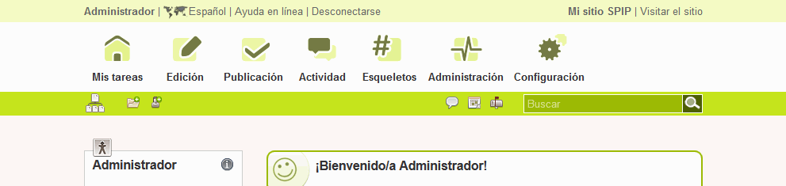
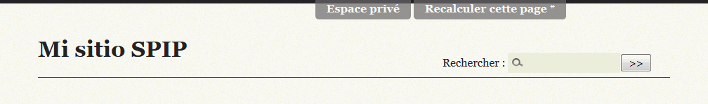
3. Traducción al español
Seleccione el idioma español como idioma del sitio y compruebe que la página del sitio para vistantes se muestra completamente en español (puede ser necesario vaciar la caché de SPIP).
Haga una captura de toda la pantalla desconectado:
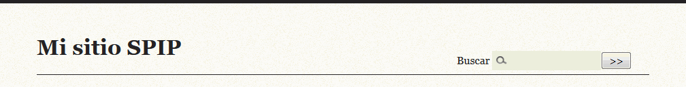
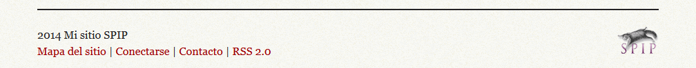
4. Información del sitio y del administrador
El sitio web estará dedicado a las aplicaciones web. Modifique el nombre y logo del sitio. Haga una captura de toda la pantalla desconectado:
Asocie una imagen al usuario administrador (el león). Haga una captura de toda la pantalla en la que se vea que se ha asociado la imagen.
5. Contenido
Como usuario administrador:
Cree dos secciones:
DB
Esta sección está dedicada a las aplicaciones de administración de bases de datos.
Wiki
Esta sección está dedicada a las aplicaciones de creación de wikis.
Cree dos artículos en la sección de bases de datos:
phpMyAdmin
phpMyAdmin es una aplicación web para la administración de bases de datos MySQL.
pgAdmin3
pgAdmin3 es una herramienta de administración y desarrollo para la base de datos PostgreSQL.
Asocie imágenes: asocie a los artículos los logotipos de las aplicaciones y a la sección el logotipo de la base de datos azul.
Haga una captura de toda la pantalla desconectado:
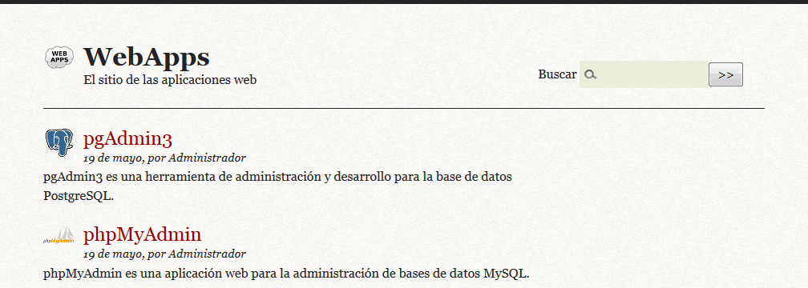
6. Usuarios
Cree el usuario redactor1, contraseña redactor1, corrreo redactor1@example.com, con estatus de redactor e imagen de usuario (el oso).
Mande un mensaje al redactor1 pidiéndole que escriba dos artículos sobre MediaWiki y DokuWiki (que le aparezcan en el calendario).
Como usuario redactor1:
Compruebe que se ha recibido el mensaje (haga tres capturas de toda la pantalla):
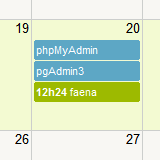
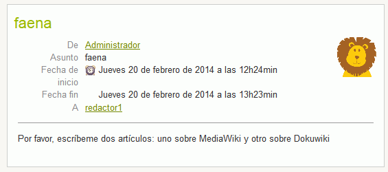
Redacte un artículo, asociándole el logo de MediaWiki y ajuntando esta guía de usuario de MediaWiki en formato PDF. Pida al administrador que lo publique (haga una captura de toda la pantalla):
MediaWiki
MediaWiki es el paquete de software Wiki utilizado en la enciclopedia libre Wikipedia.
Publique el artículo. Haga dos capturas de toda la pantalla (página de inicio y artículo):
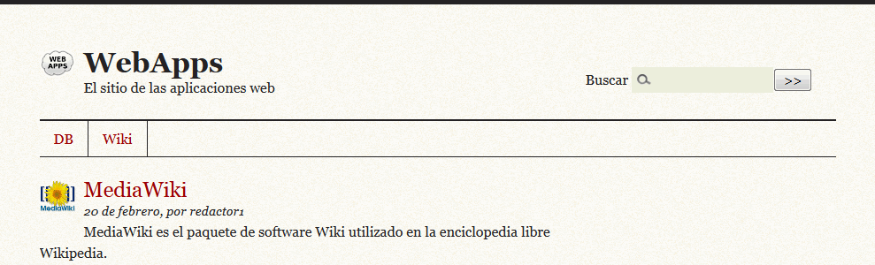
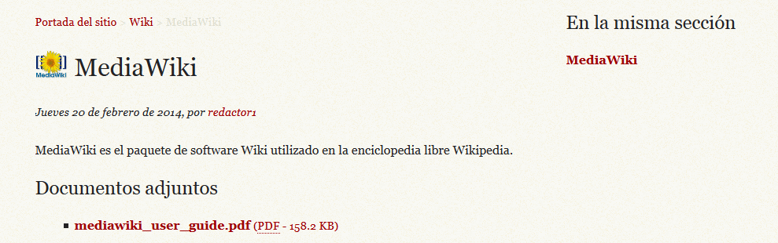
7. Alias
Configure el servidor y SPIP de manera que se acceda a SPIP mediante la dirección https://localhost/spip.
Haga una captura de toda la pantalla en la que el ratón se sitúe sobre el título del artículo y se vea abajo a la izquierda el destino del enlace:
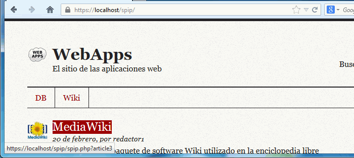
Escriba un fichero alias.txt con el alias que ha creado.
8. Estilos
Modifique el estilo de SPIP como muestran las capturas siguientes (fondo del sitio y color y fondo de los títulos de los artículos) Haga dos capturas de toda la pantalla.
9. Copia de seguridad
Entre en phpMyAdmin como usuario iaw_spip_1 y exporte la tabla con el método rápido al fichero iaw_spip_1.sql.


 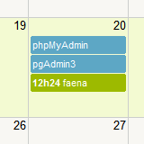
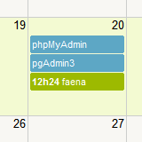